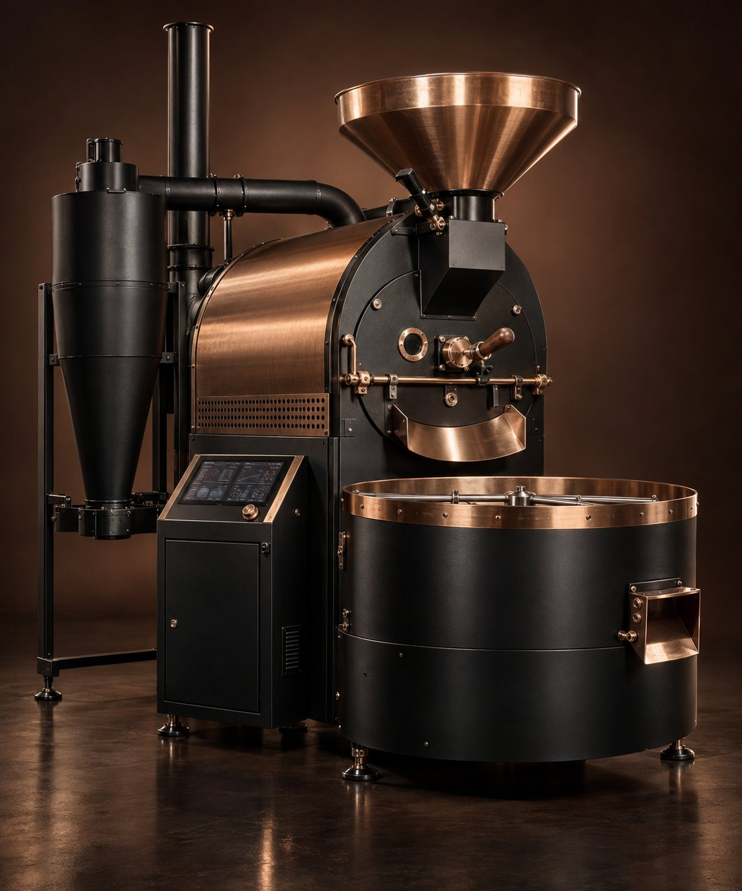
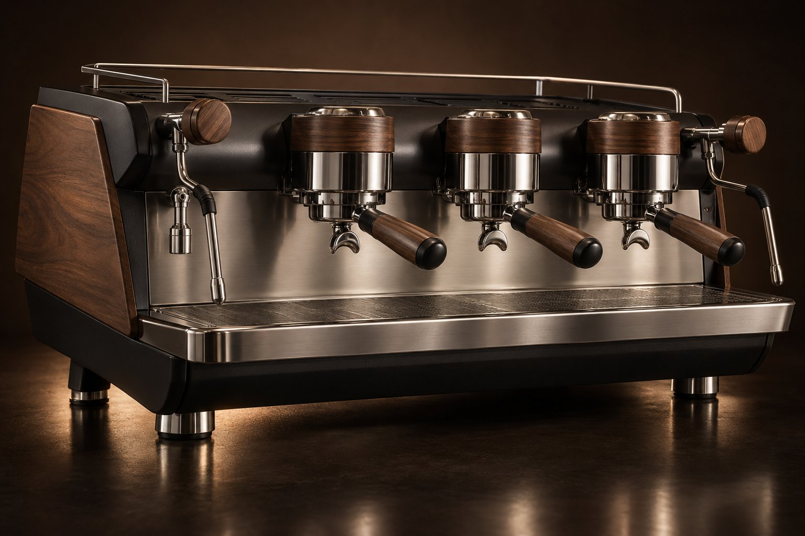
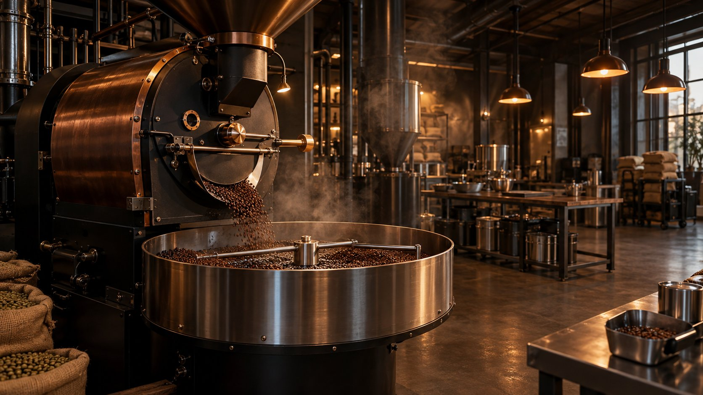
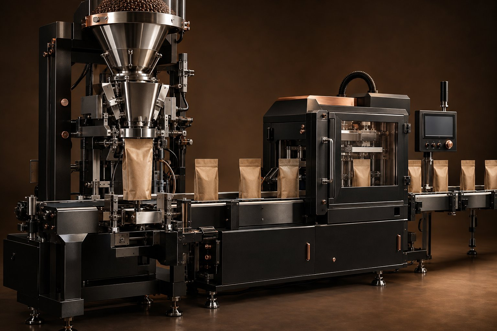

آرکا صنعت قهوهARKA COFFEE MACHINERY
کاتالوگ محصولات — آرکا صنعت قهوه
ARKA COFFEE MACHINERY · PRODUCT CATALOG
تجهیزات صنعتی قهوه
از دانهٔ سبز تا بستهٔ نهایی
رستور، آسیاب، عصارهگیری و بستهبندی؛ چهار گروه تجهیزات با مشخصات فنی مستند و امکان سفارشیسازی برای ظرفیت تولید شما.

ARKA R-60 / DRUM ROASTER
رستور صنعتی ۶۰ کیلوگرمی آر-۶۰
رستری و پروفایل رست · پرفروشترین
آر-۶۰ برای رستوریهای نیمهصنعتی و کارخانههای تولید قهوه طراحی شده است. مشعل ماژولار با کنترل الکترونیکی، درام فولاد ضدزنگ ۳۰۴ و سیستم ثبت دادهٔ دما، تکرارپذیری پروفایل رست را در تمام بچها تضمین میکند. خنککنندهٔ همزندار با جریان هوای فیلترشده، فرآیند رست را سریعتر در نقطهٔ هدف متوقف میکند.
مشخصات فنی
| ظرفیت هر بچ | ۶۰ کیلوگرم دانهٔ سبز |
| زمان رست | ۱۲ تا ۱۸ دقیقه |
| منبع حرارت | گاز شهری / الکتریک (اختیاری) |
| کنترل | PLC + HMI لمسی ۷ اینچ |
| محدودهٔ دما | ۰ تا ۲۶۰ درجهٔ سانتیگراد |
| توان الکتریکی | ۳٫۵ کیلووات |
| ولتاژ | ۳۸۰ ولت سهفاز |
| ابعاد | ۲۴۰ × ۱۶۰ × ۲۱۰ سانتیمتر |
| وزن | ۱۲۵۰ کیلوگرم |
| خروجی دود | سیکلون دو مرحلهای |
قابلیتهای کلیدی
- درام فولاد ۳۰۴ با پرههای اختصاصی برای یکنواختی حرارتی
- مشعل ماژولار گاز/الکتریک با راندمان احتراق ۹۴ درصد
- پنل لمسی ۷ اینچی با ذخیرهٔ ۵۰ پروفایل و ثبت داده
- خنککنندهٔ همزندار ۱۲ دقیقهای با فیلتر سیکلون
کاربردها
- رستوری تجاری با تولید بالای یک تن در هفته
- کارخانههای فرآوری و بستهبندی قهوه
- کافههای زنجیرهای با رست اختصاصی
ARKA R-05 / SAMPLE ROASTER
رستور نمونهبرداری ۵ کیلوگرمی آر-۰۵
رستری و پروفایل رست · مناسب کافه
آر-۰۵ رستور آزمایشگاهی با کنترل دمای دقیق و اینرسی حرارتی پایین است؛ انتخابی مناسب برای کاپینگ، ارزیابی دانهٔ سبز و توسعهٔ پروفایل پیش از تولید انبوه. نرمافزار همراه، منحنی دما و نرخ افزایش حرارت را در هر ثانیه ثبت میکند.
مشخصات فنی
| ظرفیت هر بچ | ۵ کیلوگرم دانهٔ سبز |
| زمان رست | ۹ تا ۱۴ دقیقه |
| منبع حرارت | گاز یا الکتریک |
| کنترل | نیمهخودکار + ثبت داده |
| توان الکتریکی | ۱٫۲ کیلووات |
| ولتاژ | ۲۲۰ ولت تکفاز |
| وزن | ۱۹۰ کیلوگرم |
قابلیتهای کلیدی
- ثبت دادهٔ دما و منحنی RoR با دقت یک ثانیه
- درام قابل تعویض برای رستهای نوری و تیره
- پنل کنترل دستی و نیمهخودکار
- طراحی فشرده و قابل نصب در آزمایشگاه کیفیت
کاربردها
- آزمایشگاه کیفیت رستوری
- کاپینگ و ارزیابی دانهٔ سبز
- کافههای تخصصی با رست درجا
 MILL-400
MILL-400
MILL-400 / ROLLER GRINDER
آسیاب غلطکی صنعتی میل-۴۰۰
آسیاب و دوزینگ · اتوماسیون کامل
میل-۴۰۰ با غلتکهای فولادی سختکاریشده و فاصلهٔ قابل تنظیم میکرومتری، برای تولید پودر اسپرسو، فیلتر و قهوهٔ ترک طراحی شده است. سیستم تغذیهٔ یکنواخت و سنسور دمای محصول، از افزایش دمای پودر و از دست رفتن ترکیبات معطر جلوگیری میکند.
مشخصات فنی
| ظرفیت | ۴۰۰ کیلوگرم در ساعت |
| نوع غلتک | فولاد سختکاریشده ۱۴۰ میلیمتر |
| درجهٔ آسیاب | ۴۰ حالت قابل تنظیم |
| قابلیت خنککاری | دارد — غیرتماسی |
| توان الکتریکی | ۷٫۵ کیلووات |
| ولتاژ | ۳۸۰ ولت سهفاز |
| قیف ورودی | ۴۰ کیلوگرم |
| وزن | ۴۲۰ کیلوگرم |
قابلیتهای کلیدی
- غلتک فولادی ۱۴۰ میلیمتری با پوشش ضدسایش
- تنظیم پلهای و پیوستهٔ درجهٔ آسیاب
- سیستم خنککاری یکپارچهٔ محفظهٔ آسیاب
- قابلیت اتصال به خط دوزینگ و بستهبندی
کاربردها
- خطوط تولید قهوهٔ پودری
- کارخانههای بستهبندی صنعتی
- تأمین قهوهٔ کافههای زنجیرهای
MILL-120
MILL-120 / SHOP GRINDER
آسیاب نیمهصنعتی میل-۱۲۰
آسیاب و دوزینگ
میل-۱۲۰ با برجهای برشی سرامیکی، دقت دوز و پایداری حرارتی مناسبی برای کافههای تخصصی فراهم میکند. صفحهٔ نمایشگر دوز برنامهپذیر و قابلیت قفل کردن تنظیمات، خطای اپراتور را به حداقل میرساند.
مشخصات فنی
| ظرفیت | ۱۲۰ کیلوگرم در ساعت |
| نوع برج | سرامیکی ۸۳ میلیمتر |
| دوز | ۰٫۱ تا ۲۵ ثانیه، سهحالته |
| قیف | ۱٫۵ کیلوگرم |
| توان الکتریکی | ۰٫۹ کیلووات |
| ولتاژ | ۲۲۰ ولت |
| وزن | ۳۵ کیلوگرم |
قابلیتهای کلیدی
- برج برشی سرامیکی ۸۳ میلیمتری
- دوز برنامهپذیر در سه حالت تکشات، دابل و پیوسته
- بدنهٔ آلومینیوم رنگپودری با پایهٔ ضدلرزش
- تعویض آسان برج بدون نیاز به ابزار تخصصی
کاربردها
- کافههای تخصصی
- رستوری با فروش پودر
- آشپزخانههای صنعتی

BAR-3BAR-3 / COMMERCIAL ESPRESSO
دستگاه اسپرسو سهگروه بار-۳
عصارهگیری و بار · محبوب کافهها
بار-۳ با سیستم دماکنترل چندنقطهای و دیگ بخار ۱۱ لیتری، جریان عصارهگیری ثابت را حتی در پیک سفارشها حفظ میکند. گروههای اشباعشده از جنس برنج کروماندود و نازل بخار گردان، کنترل کامل باریستا روی استخراج و بافت شیر را ممکن میسازد.
مشخصات فنی
| تعداد گروه | ۳ گروه اشباعشده |
| حجم دیگ بخار | ۱۱ لیتر |
| ظرفیت | تا ۳۰۰ فنجان در ساعت |
| دماکنترل | مستقل برای هر گروه (PID) |
| توان الکتریکی | ۵٫۵ کیلووات |
| ولتاژ | ۳۸۰ ولت سهفاز |
| ابعاد | ۱۰۵ × ۵۰ × ۵۵ سانتیمتر |
| وزن | ۷۸ کیلوگرم |
قابلیتهای کلیدی
- دیگ بخار ۱۱ لیتری با دماکنترل مستقل هر گروه
- پیشگرمکن فنجان و سیستم پیششستشوی گروه
- نمایشگر فشار دوگانه و برنامهٔ شستشوی خودکار
- پوشش وود و استنلس با امکان سفارشیسازی
کاربردها
- کافههای پرمصرف و زنجیرهای
- رستوران و هتل
- بار قهوهٔ تخصصی

COLD-200COLD-200 / EXTRACTION TANK
سیستم استخراج سرد کلد-۲۰۰
عصارهگیری و بار
کلد-۲۰۰ یک مخزن استخراج دوجداره با کنترل دما، برنامهٔ همزدن و خروجی فیلتراسیون یکپارچه است. برای تولید کنسانترهٔ سرد در مقیاس کارگاه، تأمین کافههای زنجیرهای و تولید نوشیدنی آمادهٔ مصرف طراحی شده است.
مشخصات فنی
| حجم هر دوره | ۲۰۰ لیتر |
| جنس مخزن | استیل ۳۱۶L |
| محدودهٔ دما | ۲ تا ۱۲ درجهٔ سانتیگراد |
| زمان استخراج | ۸ تا ۲۰ ساعت |
| فیلتراسیون | دو مرحلهای استیل |
| توان الکتریکی | ۲٫۲ کیلووات |
| ولتاژ | ۳۸۰ ولت سهفاز |
قابلیتهای کلیدی
- مخزن ۳۱۶L با جدارهٔ خنککننده
- برنامهٔ همزن متناوب برای استخراج یکنواخت
- فیلتراسیون دو مرحلهای در خروجی
- پنل دما و زمان با ثبت دورههای استخراج
کاربردها
- تولید نوشیدنی آمادهٔ مصرف
- کافههای زنجیرهای
- تولید کنسانترهٔ صادراتی

PACK-40PACK-40 / VACUUM LINE
خط بستهبندی وکیوم پک-۴۰
بستهبندی و اتوماسیون · صادراتی
پک-۴۰ ترکیبی از توزین دقیق، تزریق نیتروژن و وکیوم دوطرفه است تا اکسیژن باقیمانده در بسته به حداقل برسد. سیستم کنترل مرکزی، دادههای هر بچ را ثبت و امکان ردیابی محصول را فراهم میکند. مناسب بستههای ۲۵۰ گرمی تا ۱ کیلوگرمی.
مشخصات فنی
| ظرفیت | ۴۰ بسته در دقیقه |
| وزن بسته | ۲۵۰ تا ۱۰۰۰ گرم |
| دقت توزین | ±۱ گرم |
| اتمسفر | نیتروژن + وکیوم دوطرفه |
| توان الکتریکی | ۶ کیلووات |
| ولتاژ | ۳۸۰ ولت سهفاز |
| هوای مصرفی | ۶ بار — ۴۰۰ لیتر بر دقیقه |
قابلیتهای کلیدی
- توزین دقیق با خطای حداکثر ۱ گرم
- تزریق نیتروژن و وکیوم دوطرفه
- سنسور اکسیژن و نمایش آنلاین O₂
- طراحی ماژولار و قابلیت افزودن تاریخزن
کاربردها
- کارخانههای بستهبندی قهوه
- رستوری با فروش عمده
- صادرات قهوهٔ تازه
DOSE-24 / WEIGH & FILL
سیستم توزین و پرکن دوز-۲۴
بستهبندی و اتوماسیون
دوز-۲۴ نسل فشردهٔ خطوط توزین صنعتی است؛ مناسب رستوریهایی که بستهبندی را بهصورت نیمهخودکار انجام میدهند. قیف ضدالکتریسیته، لرزانندهٔ قابل تنظیم و صفحهٔ برنامهریزی بچ، فرآیند را ساده و قابل تکرار میکند.
مشخصات فنی
| ظرفیت | ۲۴ بسته در دقیقه |
| وزن بسته | ۱۰۰ تا ۵۰۰ گرم |
| دقت توزین | ±۲ گرم |
| جنس تماس | استیل ۳۱۶ گرید غذایی |
| توان الکتریکی | ۱٫۵ کیلووات |
| ولتاژ | ۲۲۰ ولت |
| وزن | ۱۸۰ کیلوگرم |
قابلیتهای کلیدی
- توزین تا ۵۰۰ گرم با دقت ±۲ گرم
- قیف استیل ضدالکتریسیته
- برنامهریزی بچ و شمارش تولید روزانه
- تمیزکاری سریع با قطعات جداشدنی
کاربردها
- رستوریهای متوسط
- بستهبندی فروشگاهی
- تولید نمونه و هدیهٔ سازمانی